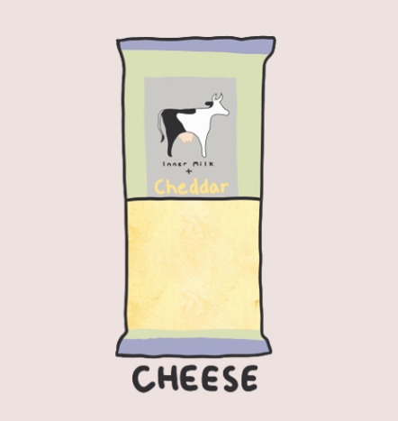
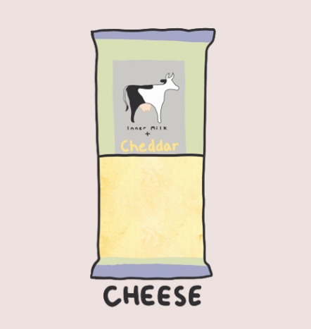
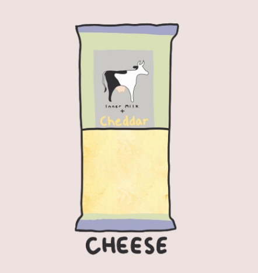
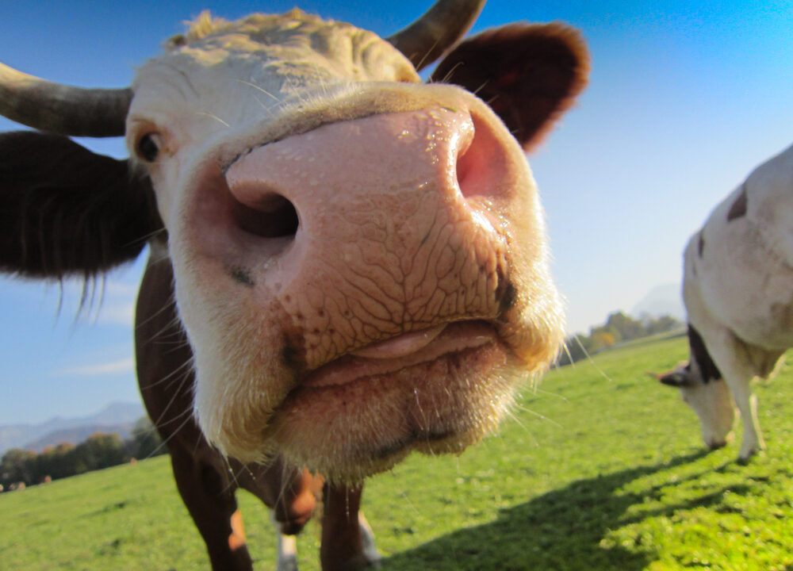
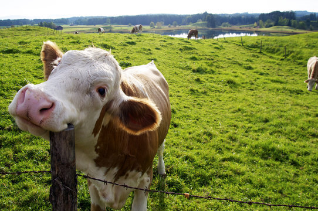
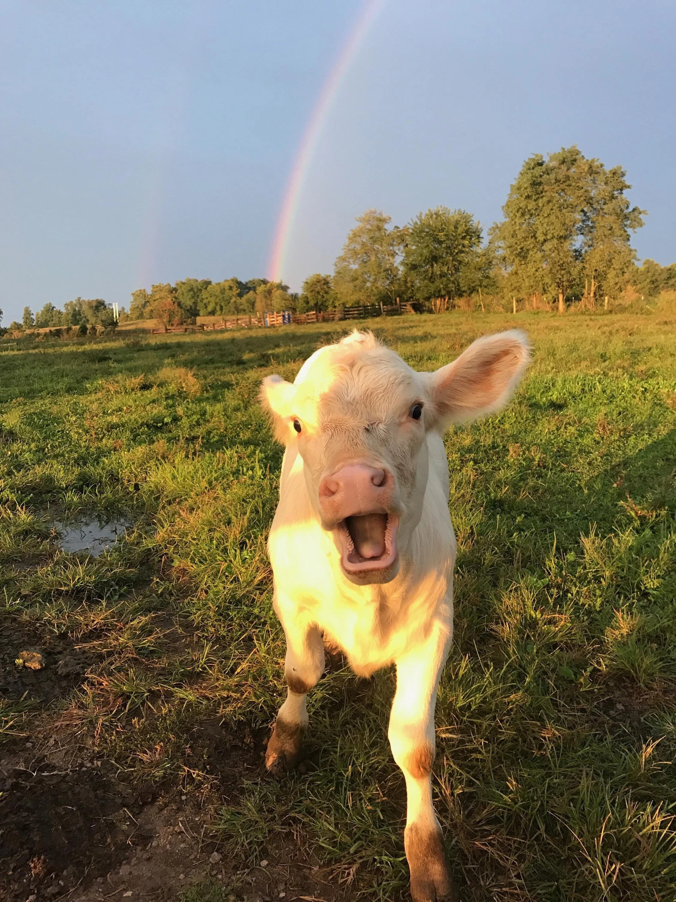
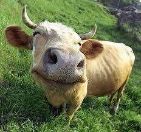
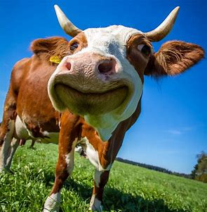
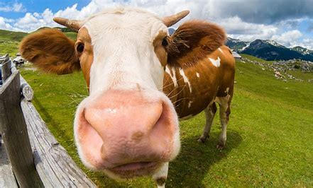

Products
Here are our products:


 



Here are our products:

We get our premium milk from free range and grass fed cows who graze on clean, sustainable pastures. All of our bottles are reusable and made from 97% recycled plastic. At our farm, we care about the environment and the impact of our cows on the climate. That's why we feed our cows a special diet that reduces their carbon dioxide and methane emissions. This diet consists of natural ingredients such as seaweed, garlic, and flaxseed, which have been shown to lower the amount of greenhouse gases produced by ruminant animals. By feeding our cows this way, we not only improve their health and welfare, but also contribute to the global effort to mitigate climate change. We believe that this is the responsible and sustainable way to produce high-quality dairy products for our customers.
Drinking milk is a healthy habit that can provide various benefits for your body. Milk is a rich source of calcium, protein, vitamin D, and other essential nutrients that can support your bone health, muscle growth, immune system, and overall well-being. Here are some of the health benefits of drinking milk regularly:
- Milk can help prevent osteoporosis, a condition that causes bones to become weak and brittle. Calcium is the main mineral that builds and maintains bone density, and milk is one of the best sources of calcium in the diet. Vitamin D, which is also found in milk, helps the body absorb calcium and regulate bone metabolism. Studies have shown that drinking milk can reduce the risk of fractures and improve bone mineral density in older adults.
- Milk can also promote muscle growth and recovery after exercise. Protein is the building block of muscles, and milk contains high-quality protein that contains all the essential amino acids that the body needs. Drinking milk after a workout can stimulate muscle protein synthesis and prevent muscle breakdown, leading to increased muscle mass and strength. Milk can also replenish fluids and electrolytes that are lost during exercise, helping to prevent dehydration and fatigue.
- Milk can boost your immune system and protect you from infections. Milk contains immunoglobulins, lactoferrin, and other bioactive compounds that have anti-inflammatory and antimicrobial properties. These substances can modulate the immune response and enhance the body's defense against pathogens. Milk can also provide vitamin A, zinc, selenium, and other micronutrients that are vital for immune function.
- Milk can improve your mood and cognitive function. Milk contains tryptophan, an amino acid that is a precursor of serotonin, a neurotransmitter that regulates mood, sleep, and appetite. Drinking milk can increase the levels of serotonin in the brain, which can improve mood and reduce stress. Milk can also provide choline, a nutrient that is involved in memory and learning. Choline is a component of acetylcholine, a neurotransmitter that facilitates communication between neurons. Drinking milk can enhance cognitive performance and prevent cognitive decline.
Here are our happy cows:
     Have any questions? Email us at innermilkplus@gmail.com
This is not an actual buisness and is just for a school project.